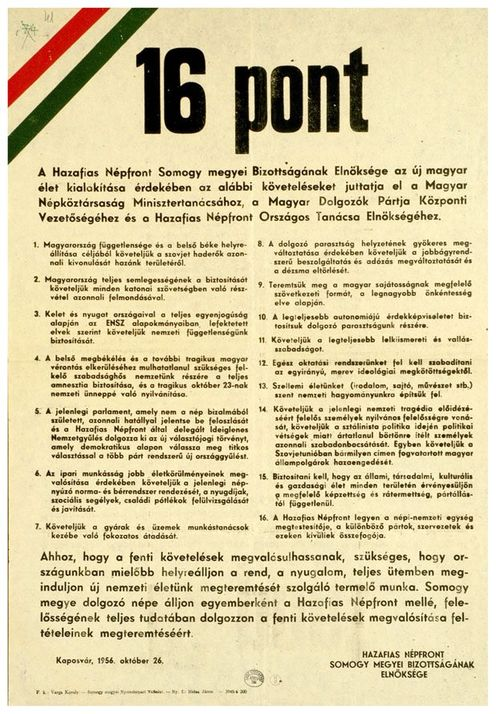
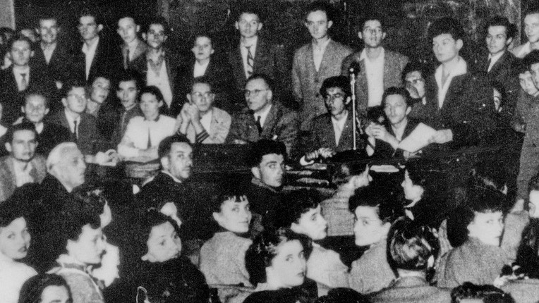

A Magyar Egyetemisták és Főiskolai Egyesületek Szövetsége, vagy MEFESZ ifjúsági szervezet volt 1956-ban, amely megtörve a Kommunista Ifjúsági Szövetség egyeduralmát, kulcsszerepet töltött be a forradalom követeléseinek kidolgozásában, a forradalom és szabadságharc hangulati előkészítésében és elindulásában, mert a forradalom követelései először Szegeden, a MEFESZ 1956. október 20-ai nagygyűlésén fogalmazódtak meg.
A szegedi hallgatók új érdekképviseleti szervezete végül 1956. október 16-án jött létre, amikor a Bölcsészettudományi Kar nagyelőadójában, az Auditórium Maximumban tartott nagygyűlésen kiváltak a hivatalos kommunista ifjúsági szervezetből, a DISZ-ből.
 a./ a nőhallgatók számára töröljék el a honvédelmi oktatást, a férfi hallgatók óraszámát heti 2 órára csökkentsék
b./ a nem szaktárgyakból megfelelt - nem megfelelt minősítés legyen
c./ a marxizmus oktatását szabadítsák meg a dogmatizmustól, a minősítés megfelelt - nem megfelelt legyen. Kevesebb kötelező órát, több speciál kollégiumot
6. a./ Szálló és lakásügyben lakásügyi bizottságot hozunk létre, mely megállapítja a lakások maximális bérét.
b./ A szálló igazgatójának kinevezésénél az ifjúság képviselőjének vétójoga legyen.
c./A felszabaduló középületekből az igények szerint diákszállókat hozzanak létre.
7. a./ Külföldi utazások szervezése keletre és nyugatra.
b./ 50%-os utazási kedvezményt követelünk belföldi utazásokra